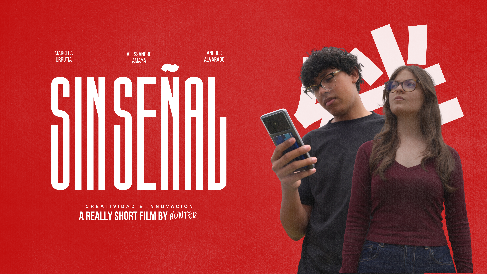
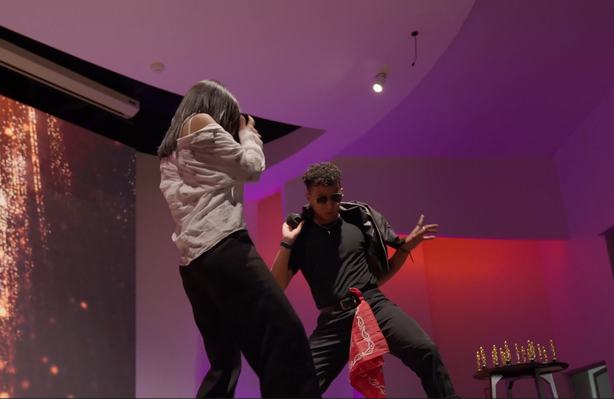

Sin Señal - Cortometraje

Cuando la señal desaparece, ¿Cómo rescataremos la conexión?
View collectionHey, I'm

fotografo, videografo, comunicólogo y creativo

La mayoría de lo que hago surge como una excusa para tomar la cámara, y luego se transforma en algo de lo que no puedo parar de hablar.
Abierto a trabajo freelance, colaboraciones y a cualquiera que quiera hablar sobre cámaras, ecosistemas y muchos otros temas.

Cuando la señal desaparece, ¿Cómo rescataremos la conexión?
View collection
Ceremonia de Premiación de la carrera de Comunicación Estratégica y Audiovisual de UNITEC.
Ver galería
Una idea que se volvió realidad exactamente como la imaginaba.
Ver galería
Chefs y cocineros celebran su aniversario...
¿Qué significa para ti "PDI"?

Celebrando el lugar que me ha dado las herramientas para la mayoría de mi trabajo!!!
Ver galería
¿El reto? Capturar lo más bonito que veamos en este viaje familiar
Ver galería
Highlights de un viaje de Pastoral Juvenil
Ver galería
Cuando estás en el set de un cortometraje... ¿Porqué no convertirse en el fotógrafo del detrás de cámaras?
Ver galería
¡Hola! Soy Alessandro. Me dedico a la fotografía y al video, y me apasiona contar esas historias que merecen ser contadas, sobre todo aquellas que normalmente no escuchamos en nuestro entorno. Me apasiona abordar los temas culturales, sociales y ecológicos, y sueño con algún día poder comunicar estos mensajes para transmitirlos a miles de personas, y trabajar con la ONU y/o la Unión Europea en sus departamentos de Comunicación y Producción Audiovisual.
La fotografía ha sido una de mis pasiones desde siempre. Empecé solo admirando fotos y capturando momentos con una point and shoot vieja, hasta que en 2023 conseguí mi primera cámara real, una Nikon D5100 que todavía utilizo. El cine siempre me ha llamado la atención, pero no fue hasta una semana después de empezar mi pasantía, cuando me asignaron mi primer proyecto audiovisual, capturar lo que ocurría en el aniversario del CAM, que finalmente tuve la oportunidad de meterme de lleno al video. Me lanzaron a la parte más profunda, y desde entonces ha sido una de mis pasiones más grandes.
Desde que comienzo cada proyecto, nunca me falta la visión del resultado final, y lo construyo un fragmento a la vez. Si el proyecto nace desde cero, obtiene la seriedad que merece: hago guión, planifico y organizo las ideas antes de grabar. Aun así, siempre dejo espacio para los ajustes que me lleven al resultado del que pueda sentirme orgulloso.
Lo que pueden esperar de mí es que siempre esté comprometido a contar sus historias de la mejor manera, sin importar el formato en que estén.
Mi camino hasta ahora.
Desde estudios de comunicación hasta diplomados de fotografía, todo desde Honduras.
Tegucigalpa, Honduras ( 2026 - Presente )
Tegucigalpa, Honduras (2026 - Presente )
Tegucigalpa, Honduras ( 2024 )
Or email me directly at g.alessandroerazo@gmail.com.